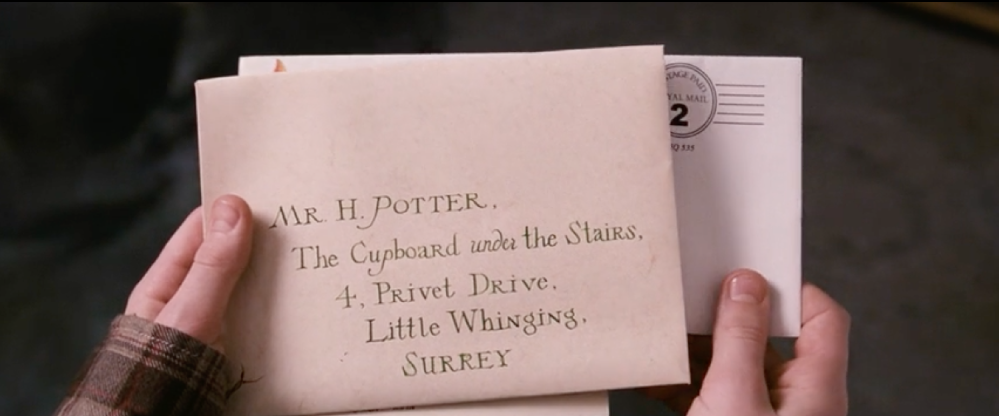

The Start
Harry Potter lives with his neglectful uncle and aunt, Vernon and Petunia Dursley, and their bullying son, Dudley. On Harry's eleventh birthday, Rubeus Hagrid, a half-giant, delivers an acceptance letter from Hogwarts School of Witchcraft and Wizardry, revealing that Harry's parents, James and Lily Potter, were wizards. When Harry was just a year old, a powerful but malevolent dark wizard named Lord Voldemort murdered his parents; Harry survived Voldemort's killing curse that rebounded and seemingly destroyed the Dark Lord, leaving a lightning bolt-shaped scar on his forehead. Unknown to Harry, this act made him famous in the wizarding world.
